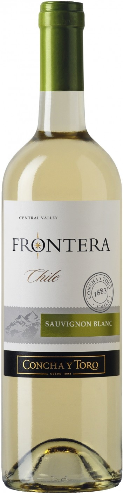

Вино Frontera
 КупитьОписание товара
| Вино: | Белое, полусухое |
| Регион: | Чили, Центральная Долина |
| Производитель: | Concha y Toro |
| Крепость: | 12% |
| Объем: | 0.75 л |
| Виноград: | Совиньон Блан: 100% |
Характеристики товара
- Цвет
Вино яркого зеленовато-желтого цвета. - Вкус
Вкус вина — хорошо сбалансированный, легкий и свежий, с гладкой текстурой. - Аромат
Фруктовый аромат вина наполнен нотами цитрусовых и персика. - Гастрономические сочетания
Вино подходит к рыбе с легкими соусами, морепродуктам, салатам, фруктам.
Подробное описание товара
"Фронтера" — "Чили в стакане", линейка моносортовых вин компании Конча и Торо, которые продаются в 120 странах мира на пяти континентах. Вина "Фронтера" рождаются в Центральной долине Чили, в винодельческом рае, где виноградники находятся под защитой четырех естественных границ. На юге она граничит с потрясающей красоты ледниками, на севере — с засушливой пустыней Атакама, на востоке — с величественными горными хребтами Анд, на западе — с Тихим океаном. Как говорит Гектор Урзуа, один из создателей линейки "Фронтера", "я верю в своеобразие и силу вин Нового Света, в их веселую и благородную сущность. Я хочу, чтобы эти черты были присущи каждому сделанному мной вину. В этом и состоит цель моей работы". "Frontera" Sauvignon Blanc — белое сухое вино, созданное из винограда сорта Совиньон Блан, собранного вручную на виноградниках в Центральной Долине в марте. После ферментации вино выдерживалось в стальных резервуарах в течение 2-х месяцев.